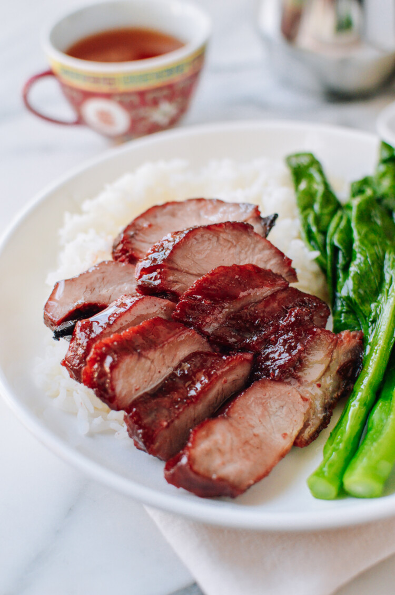
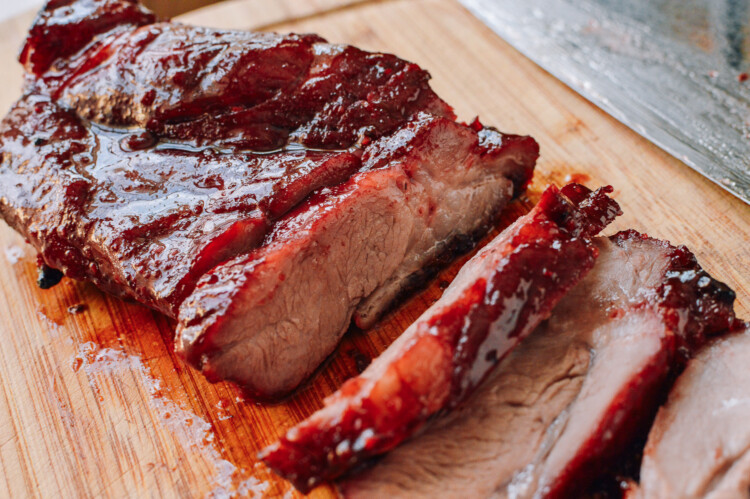

Char Siu

Char siu (叉烧) is a type of cantonese roast meat. Char siu (or slightly different spelling, cha siu) is its cantonese name, but in mandarin, it is known as cha shao. To make char siu, pork is marinated in a sweet BBQ sauce and then roasted. Over the years, the flavor of the char siu one could get in noodle shops and roast meat restaurants in chinatowns around the world developed a signature sweetness. But today, many restaurants skimp on the spices!
Ingredients
- 3 lb pork shoulder/pork butt
- 6 tbps sugar
- 1 1/2 tbps salt
- 1 1/2 tsp chinese five spice powder
- 1/2 tsp white pepper
- 1 tsp sesame oil
- 3 tbps wine
- 3 tbps soy sauce
- 1 1/2 tbps hoisin sauce
- 2 tbps garlic (minced)
- 3 tbps honey
Instructions
- Cut the pork into long strips or chunks about 2 to 3 inches thick. Don't trim any excess fat, as it will render off and add flavor.
- Combine the sugar, salt, chinese five spice powder, white pepper, sesame oil, wine, soy sauce, hoisin sauce, and garlic in a bowl to make the marinade.
- Reserve about 2 tbsp of marinade and set it aside. Rub the pork with the rest of the marinade in a large bowl.
- Cover and refrigerate overnight, or at least 8 hours. Cover and store the reserved marinade in the fridge as well.
- Line a sheet pan with foil and place a metal rack on top. Using the metal rack keeps the pork off of the pan and allows it to roast more evenly. Place the pork on the rack, leaving as much space as possible between pieces. Pour 1 1/2 cups water into the pan below the rack. This prevents any drippings from burning or smoking.
- Transfer the pork to a preheated oven. Roast for 25 minutes, keeping the oven setting at 475 °F (245 °C) for the first 10 minutes of roasting, and then reduce your oven temperature to 375 °F (190 °C).
- After 25 minutes, flip the pork. If the bottom of the pan is dry, add another cup of water. Turn the pan 180 °C to ensure even roasting. Roast another 15 minutes. Throughout the roasting time, check your char siu often (every 10 minutes) and reduce the oven temperature if it looks like it is burning!
- Meanwhile, combine the reserved marinade with the honey and 1 tbsp hot water. This will be the sauce you'll use for basting the pork.
- Remove from the oven and baste with the last bit of reserved BBQ sauce. Let the meat rest for 10 minutes before slicing and enjoy!

Home